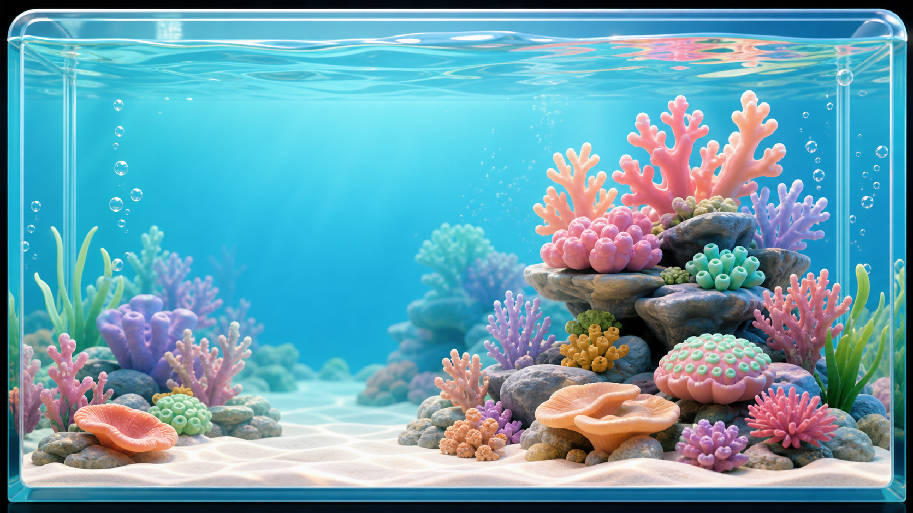

My Saltwater Aquarium
오늘의 어항 상태

오늘 할 일
최근 수질 추이
수질 기록
환수/관리 일정
수질 로그
| 날짜 | 수온 | 염도 | 알칼리티 | 질산염 | 암모니아 | 인산염 | 관리 |
|---|
생물 등록
장비 상태
해수어 도감
초급 안정적인 수질에서 적응이 쉬움
중급 수조 크기, 합사, 먹이 또는 위치 관리 필요
상급 장기 안정화, 전용 먹이, 세밀한 관찰 필요
합사 체크
두 생물을 선택하면 합사 의견을 보여줍니다.